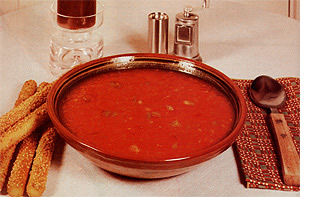

When the days are so warm (here in my hometown of Hollywood, Maryland) that everything-and everybody-seems to wilt, I like to prepare gazpacho . . . a chilled dish that's a delicious tradition in its native Spain.
The Latin specialty is an especially good summertime treat because it calls for several of the vegetables that we always have in such abundance this time of the year: tomatoes, cucumbers, green peppers . . . and-if you wish-even zucchini and other summer squashes!
Better still, the spicy soup is satisfying enough to enjoy as an economical main dish on days when the temperature's so high you don't want to cook.
Here's my recipe for about two quarts of the cooling crowd-pleaser:
3 pounds (about 4 or 5) very ripe tomatoes
2 medium-sized cucumbers
1/2 cup green pepper, minced
2 medium-sized summer squashes (optional)
1/2 cup onion, minced
1or 2 cloves garlic, minced
2 cups tomato juice or water
3 tablespoons vinegar
3 tablespoons olive oil or corn oil (purists may disagree, but I've found this ingredient to be optional)
Tabasco sauce to taste, or 1 small hot red pepper, finely minced, salt and pepper to taste
Peel and chop the tomatoes and cucumbers, reserving any juice for the soup, and combine them with the remaining ingredients in a large bowl or tureen. According to your preference, you can [1] puree any or all of the vegetables in a blender, [2] simply dice them, or [3] whirl them in the blender only briefly, so that enough chunks remain to make the soup more interesting to eat.
If you choose to add some variety of summer squash (which will not change the flavor appreciably and is a good way to use these prolific vegetables), first steam the squash, let them cool, and then mash or puree them.
Thoroughly chill the gazpacho in its mixing/serving vessel, then ladle it into soup bowls and serve it with either bread sticks or crackers. Mmm . . . mmm . . . good!
|
 |
|
|